Transaxle Installation
TRANSMISSION ASSEMBLY INSTALLATION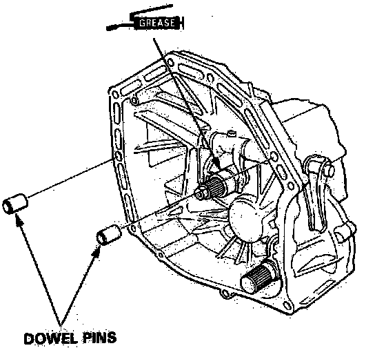
1. Fill the clutch release bearing, release fork, and release guide with Super High Temp Urea Grease (P/N 08798-9002).
2. Fill the extension shaft with Super High Temp Urea Grease (P/N 08798-9002).
NOTE:
* Check that the two dowel pins are installed in the clutch housing.
* If the clutch housing is replaced, the 26 mm shim must be adjusted.
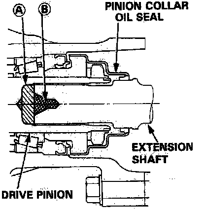
3. Fill the drive pinion with grease.
If Pinion collar oil seal is replaced:
A: 19 - 20 g (0.67 - 0.71 oz)
If pinion collar oil seal is not replaced:
A: 3.5 - 4.5 g (0.12 - 0.16 oz)
4. Place the transmission on the transmission jack, and raise it to the engine level.
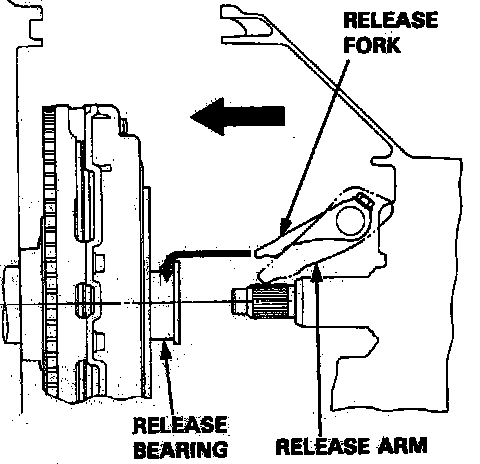
5. Turn the release fork up, then, as you install the transmission, place the release fork in the groove of the release bearing by turning the release arm down.
NOTE: Make sure the release fork engages the release bearing properly.
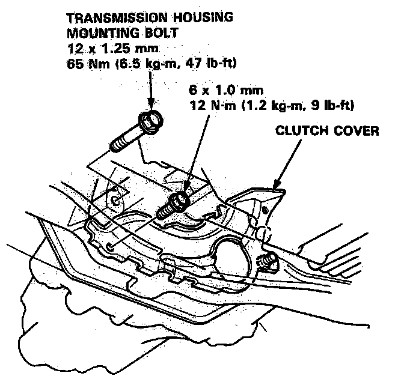
6. Install the transmission housing mounting bolt and the clutch cover.
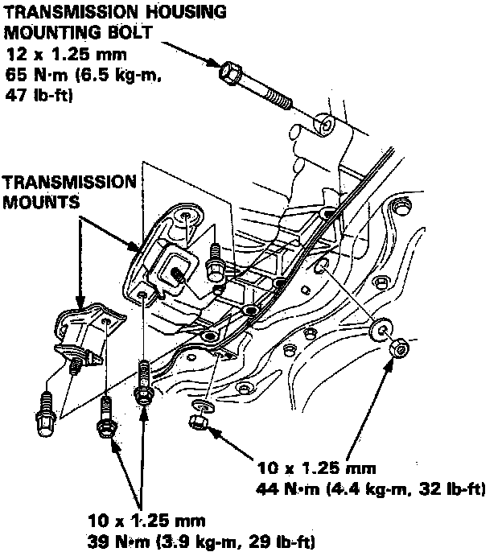
7. Install the transmission mounts.
8. Install the transmission housing mounting bolt.
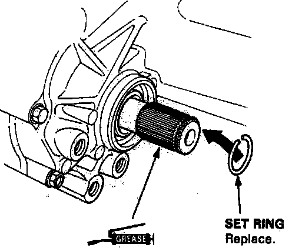
9. Install the set ring, then install the extension shaft.
NOTE: Apply Super High Temp Urea Grease (P/N 08798-9002) to the extension shaft spline.
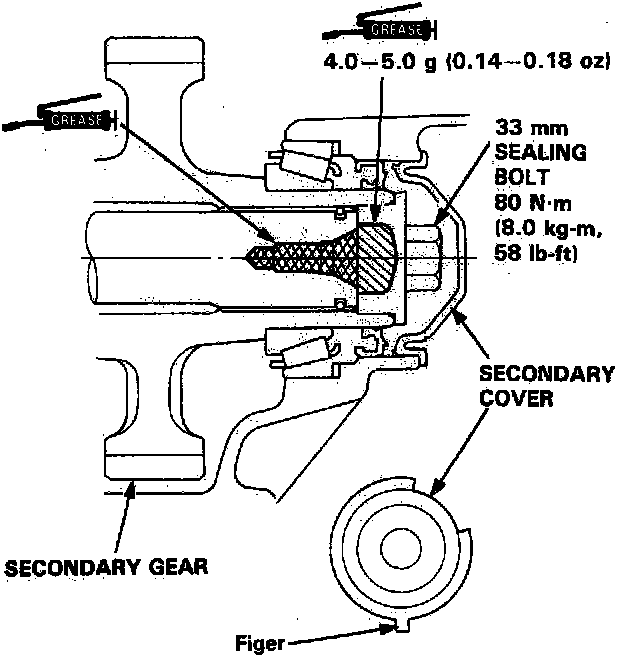
10. Fill the secondary gear and extension shaft with Super High Temp Urea Grease (P/N 08798-9002).
11. Install the 33 mm sealing bolt and secondary cover.
NOTE:
* Shift to low gear to lock the secondary gear.
* Apply liquid gasket (P/N 08718-0001) to the threads.
* Turn the secondary cover so the finger is facing down.
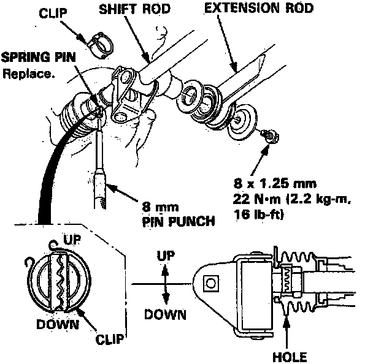
12. Install the shift rod and the extension rod.
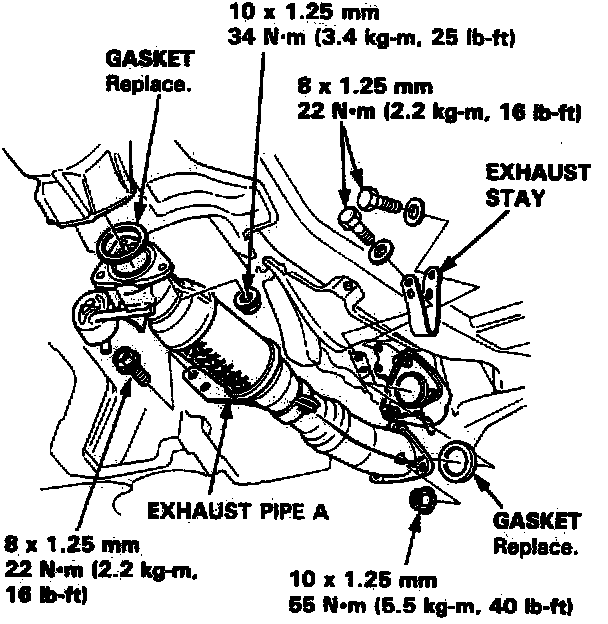
13. Install the exhaust pipe A and the exhaust stay.
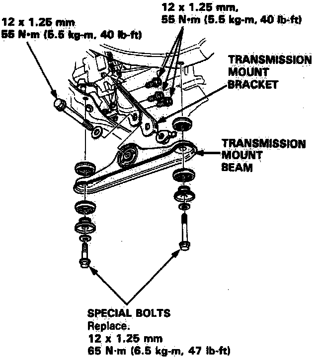
14. Install the transmission mount bracket and the transmission mount beam.
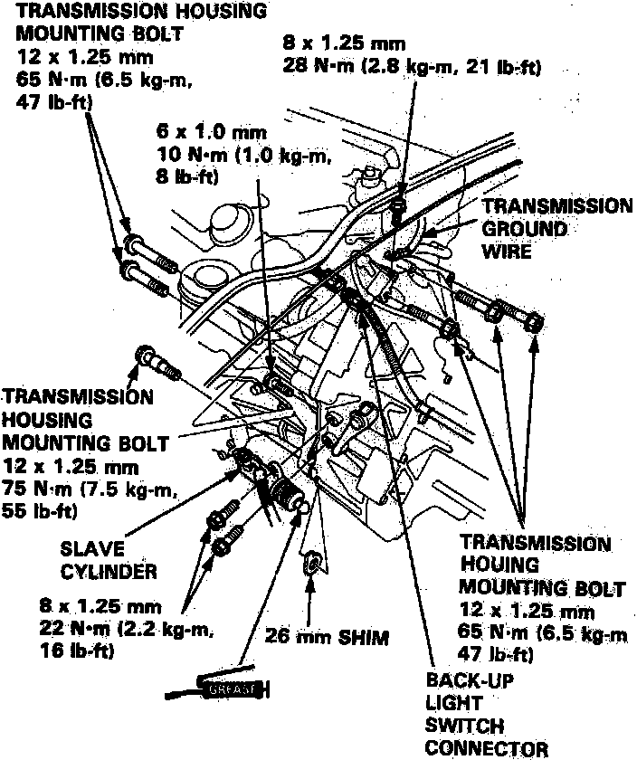
15. Install the 26 mm shim and the transmission housing mounting bolts.
16. Install the slave cylinder.
17. Connect the back-up light switch connector and the transmission ground wire.
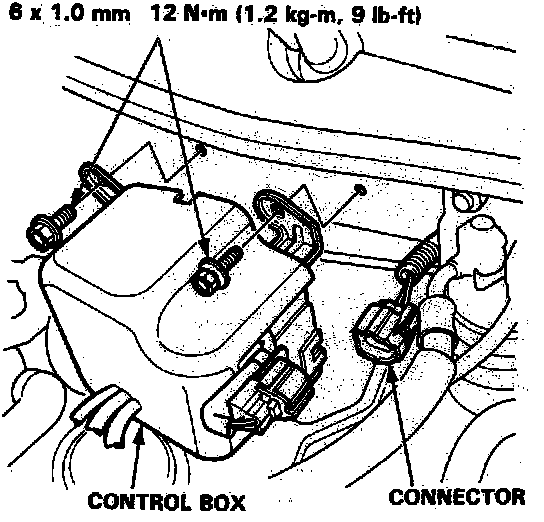
18. Install the control box.
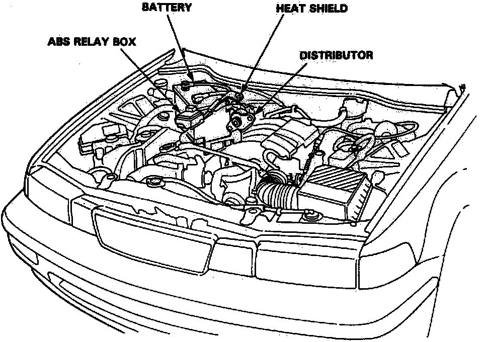
19. Install the distributor.
20. Install the heat shield.
21. Install the ABS relay box.
22. Install the battery base and battery.
23. Refill the transmission with oil.
24. Connect the battery positive (+) and negative (-) cables to the battery.
25. Check the clutch operation.
26. Shift the transmission and check for smooth operation.
27. Check the ignition timing.
Ignition Timing (All models): 15° ± 2° BTDC (RED)
at 700 ± 50 rpm in neutral (M/T); in [N] or [P] (A/T)
28. After service, reconnect power to the radio and turn it on.
When the word "CODE" is displayed, enter the customer's 5-digit code to restore radio operation.